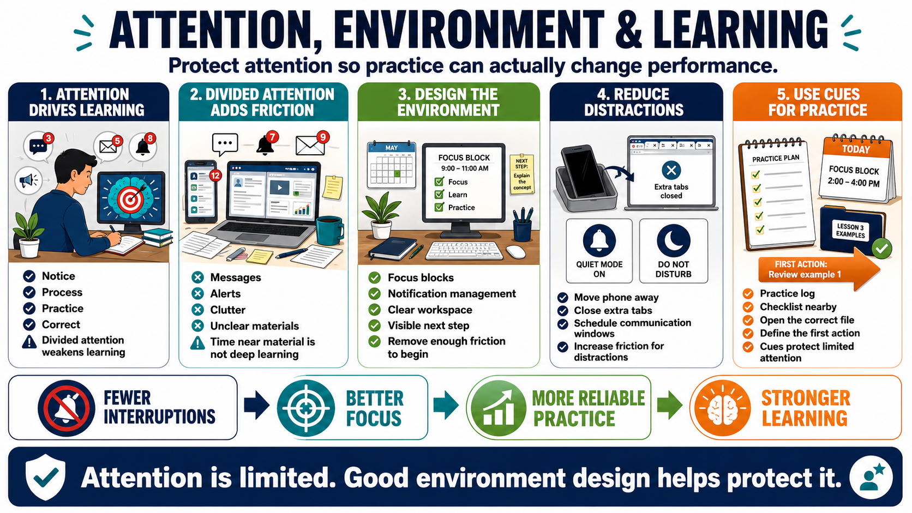

Attention, Environment, and Distraction
Connecting to LMS... Progress: in progress

Narration
Attention is a gateway for learning and plastic change. Learners are more likely to improve what they notice, process, practice, and correct. When attention is divided across messages, alerts, clutter, and unclear materials, the learning signal becomes weaker. The learner may spend time near the material without engaging deeply enough to change performance.
Environment design can support attention by reducing interruption and lowering friction around important practice. Focus blocks, notification management, clear workspace setup, and visible next steps can all make deliberate practice easier to begin. The goal is not to create a perfect environment. The goal is to remove enough friction that the important behavior can occur more reliably.
Phones and notifications are practical examples. If a learner must constantly resist alerts, attention is being taxed before practice even starts. Increasing friction for distractions can be useful: moving the phone out of reach, closing nonessential tabs, or scheduling communication windows. Reducing friction for practice can be equally simple: open the correct file, set the checklist nearby, and define the first action.
Visual cues can help when they point to the desired behavior. A practice log, a prepared workspace, a checklist, or a calendar block can remind the learner what matters. Environment design is not manipulation. It is acknowledging that attention is limited and that the surrounding system can either protect or consume it.